Piezas de carrocería para Honda CR-V
62 piezas disponibles hoy para Honda CR-V, cada una con su foto y su código: flares (14), defensas traseras (9), parrillas (7), defensas delanteras (7). Dinos el año de tu carro y te confirmamos si le sirve.
- Garantía de 3 días
- Foto real de cada pieza
- Efectivo, Yappy o ACH
- Lunes a sábado, 8:00 a. m. a 5:00 p. m.
Flares para Honda CR-V 14
 FL006CRV2017-22 · lado derecho · genérico
FL006CRV2017-22 · lado derecho · genérico FL015CRV2015-16 · lado izquierdo · original
FL015CRV2015-16 · lado izquierdo · original FL017CRV2015-16 · lado derecho · original
FL017CRV2015-16 · lado derecho · original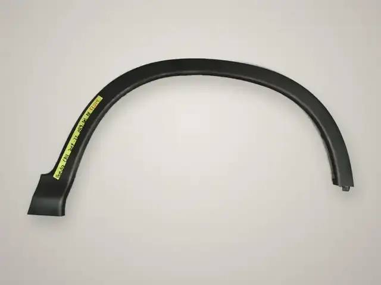
FL019CRV2017-22 · lado derecho · original FL024CRV2012-16 · lado derecho · original
FL024CRV2012-16 · lado derecho · original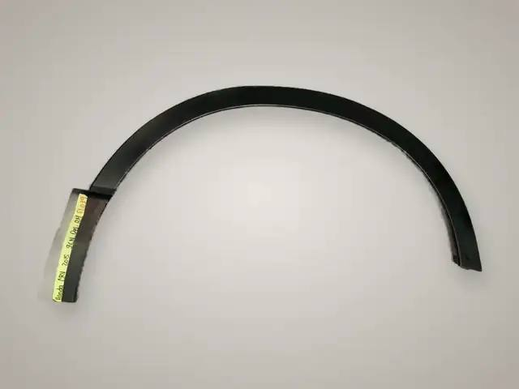
FL039CRV2015-16 · lado derecho · genérico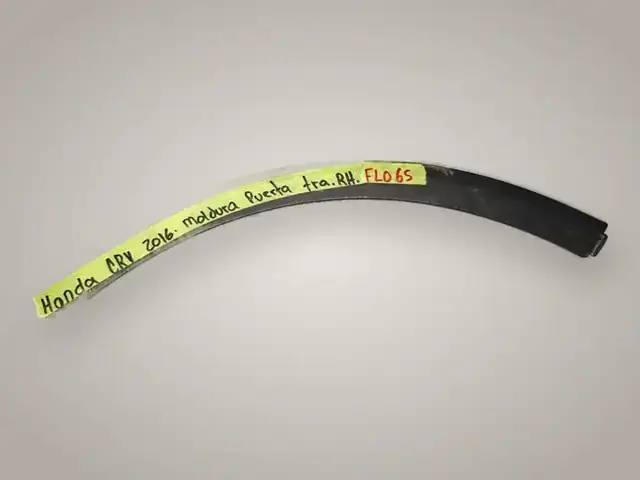
FL065CRV2015-16 · lado derecho · original FL092CRV2017-22 · lado izquierdo · original
FL092CRV2017-22 · lado izquierdo · original FL149CRV2023-26 · lado derecho · original
FL149CRV2023-26 · lado derecho · original FL151CRV2018-22 · lado derecho · original
FL151CRV2018-22 · lado derecho · original FL155CRV2017-22 · lado derecho · original
FL155CRV2017-22 · lado derecho · original FL164CR-V2013-16 · lado izquierdo · original
FL164CR-V2013-16 · lado izquierdo · original FL165CR-V2013-16 · lado derecho · original
FL165CR-V2013-16 · lado derecho · original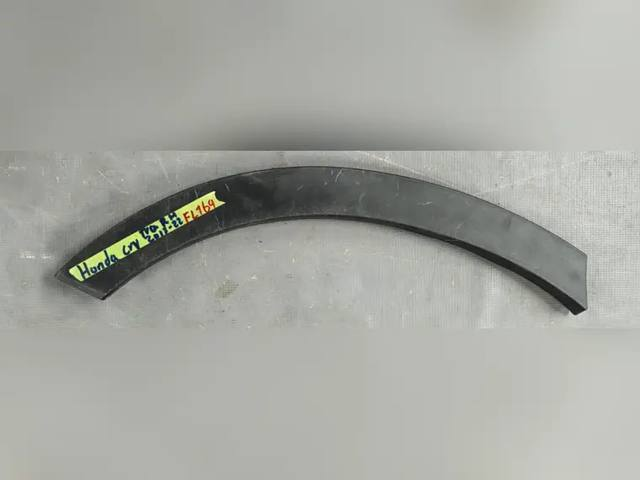
FL169CR-V2017-22 · lado derechoDefensas traseras para Honda CR-V 9
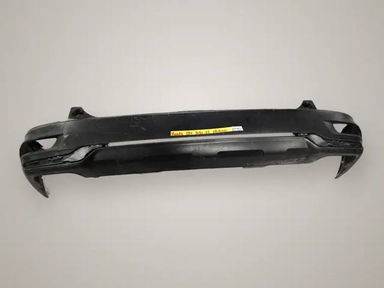
DT151CRV2020-22 · original DT152CRV2020-22 · original
DT152CRV2020-22 · original DT187CR-V2015-16 · original
DT187CR-V2015-16 · original DT227CR-V2015-16 · genérico
DT227CR-V2015-16 · genérico DT232CR-V2012-22 · original
DT232CR-V2012-22 · original DT234CR-V2017-19 · original
DT234CR-V2017-19 · original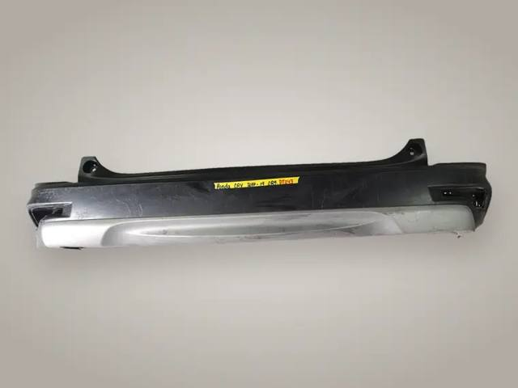
DT243CR-V2017-19 · original DT246CR-V2017-19 · original
DT246CR-V2017-19 · original DT249CR-V2017-20 · original
DT249CR-V2017-20 · originalParrillas para Honda CR-V 7
 524CRV2017-19 · original
524CRV2017-19 · original 527CRV2020-22 · original nuevo
527CRV2020-22 · original nuevo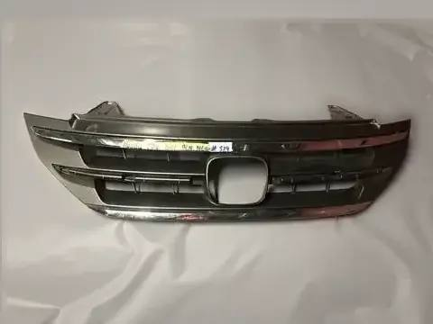
529CRV2012-14 · genérico nuevo 530CRV2010-11 · original nuevo
530CRV2010-11 · original nuevo 531CRV2017-19 · original nuevo
531CRV2017-19 · original nuevo 532CRV2017-19 · genérico nuevo
532CRV2017-19 · genérico nuevo 675CR-V2007-09 · original
675CR-V2007-09 · originalDefensas delanteras para Honda CR-V 7
 866CR-V2008-10 · original
866CR-V2008-10 · original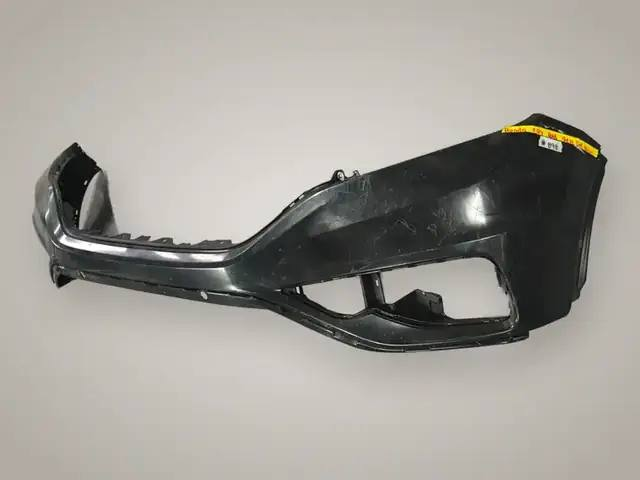
898CR-V2015-16 · genérico nuevo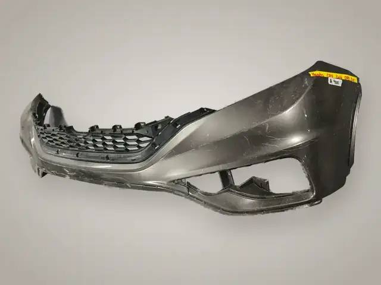
900CR-V2015-16 · original 905CR-V2012-14 · original
905CR-V2012-14 · original 909CR-V2012-14 · original nuevo
909CR-V2012-14 · original nuevo 910CR-V2015-17 · original
910CR-V2015-17 · original 911CR-V Inferior2020-22 · original
911CR-V Inferior2020-22 · originalCovers de halógena para Honda CR-V 6
 CH020CR-V2012-14 · lado izquierdo · original
CH020CR-V2012-14 · lado izquierdo · original CH021CR-V2012-14 · lado derecho · original
CH021CR-V2012-14 · lado derecho · original CH022CR-V2012-14 · lado derecho · original nuevo
CH022CR-V2012-14 · lado derecho · original nuevo CH106CR-V2015-16 · lado izquierdo · original nuevo
CH106CR-V2015-16 · lado izquierdo · original nuevo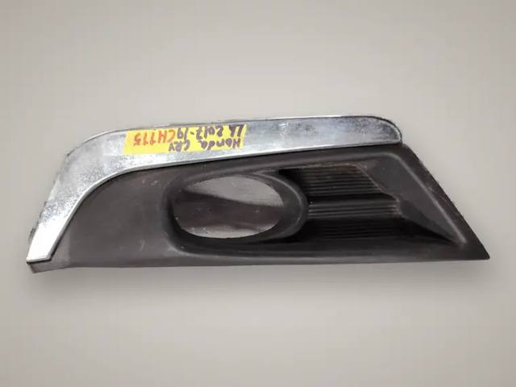
CH115CR-V2017-19 · lado izquierdo CH144CR-V2012-14 · lado derecho
CH144CR-V2012-14 · lado derechoDefensas delanteras inferiores para Honda CR-V 5
 DDI011CR-V
DDI011CR-V DDI015CR-V
DDI015CR-V DDI017CR-V
DDI017CR-V DDI032CR-V
DDI032CR-V DDI007CR-V
DDI007CR-VFaros y lámparas delanteras para Honda CR-V 3
 081CR-V2017-22 · lado derecho · original
081CR-V2017-22 · lado derecho · original 085CRV2012-14 · lado izquierdo · original
085CRV2012-14 · lado izquierdo · original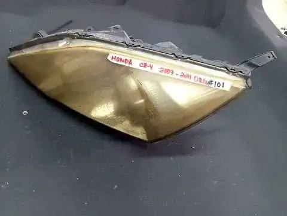
101CR-V2007-2011 · originalCubrepolvos para Honda CR-V 2
 CP077CR-V
CP077CR-VEstribos y rolling boards para Honda CR-V 2
 RB031CR-V2007-2011 · lado derecho · original
RB031CR-V2007-2011 · lado derecho · original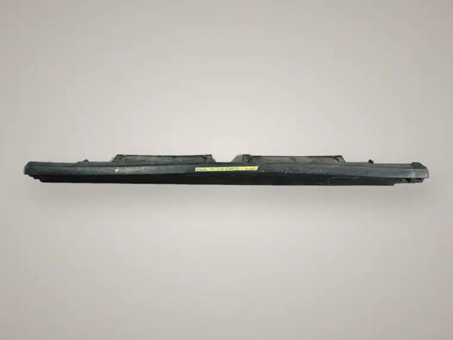
RB007CR-V2012-2016 · lado izquierdo · original 346CRV
346CRV PD027CR-V
PD027CR-V EDT015CR-V
EDT015CR-V